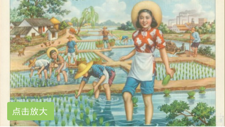

点击放大
《长阳山歌》
长阳山歌在三千多年前就被称为“蛮歌巴舞”、“下俚巴人”。清代长阳著名诗人彭秋潭在《长阳竹枝词》中写道：“换工男女上山坡，处处歌声应鼓锣，但汝唱歌莫轻[1] 薄，那山听见这山歌”。在县境内的地名中留下了不少痕迹，如“对舞溪”、“歌唱坪”、“锣鼓淌”、“发歌岑”等等。长阳山歌在三千多年前就被称为“蛮歌巴舞”、“下俚巴人”。清代长阳著名诗人彭秋潭在《长阳竹枝词》中写道：“换工男女上山坡，处处歌声应鼓锣，但汝唱歌莫轻[1] 薄，那山听见这山歌”。在县境内的地名中留下了不少痕迹，如“对舞溪”、“歌唱坪”、“锣鼓淌”、“发歌岑”等等。
- 时间 | 安徽民间传统工艺
- 地点 | 安徽民间传统工艺
- 条目类型 | 安徽民间传统工艺
- 专题 | 安徽民间传统工艺